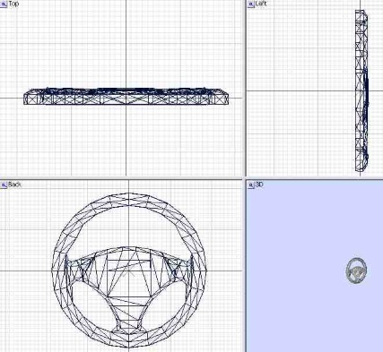

Step 3b: Preparing and Exporting the Dashboard
If you do not have a dashboard model for this car, skip this step.
Importing the dashboard is very easy compared to the car.
Import the dashboard file(s) the same way as you did the car.
Like the car, you will need:
The dashboard / interior
The gauges
The shifter
the seats
the steering column
the mirrors
the steering wheel
A dashboard needle
You will NOT need:
The driver
the dummies, nulls and/or nurbs
Take the parts you need, and unite them. Name it as cockpit[0].
Import the car model.
Line up the dashboard, using move, and if needed, scale, to fit it in the car model's interior space.
If the car has a hood, you can delete the exterior model, but leave the hood and fenders. Sometimes, as in the case of a hood scooper, a cowl, or high fenders, you can see it in front of you. Rename this hacked model as cockpit[1].
Once that is done, just export it, save it as your car's short name, with a C at the end, like vanqshc.mod
Take the Steering wheel, and move it so that the axes make a perfect cross section, as shown.

Right-click it in the objects list, and rename it to wheel[0].
Export it, saving it as your car's short name with a w at the end, like in vanqshw.mod
Repeat for the needle, but put the bottom of the needle (or near bottom) on the X and Z axis.
Export the needle as needle.mod
Once you are happy, move ONWARD.